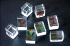

誰かが を切りながら、「中ビーム！」と叫んだら、対面はワナワナと手を振り、しびれたフリをする。そもそも、中ビームとは....なんて事にはじぇ〜んじぇん関係ない話。 を切りながら、「中ビーム！」と叫んだら、対面はワナワナと手を振り、しびれたフリをする。そもそも、中ビームとは....なんて事にはじぇ〜んじぇん関係ない話。
中国麻将は花牌を使う。大体は春夏秋冬と梅蘭菊竹の８枚。しかし日本麻雀では使わないので、粗末にされている。古い牌などでは紛失したのか捨てられたのか、花牌がまったく残っていないセットも多い。
そこでどこかの知恵者が、どうせ使わないならばと、花牌を予備牌とすることを考えた。つまり花牌８枚のうち４枚を、何も彫らないで白板状態にしておく。そうすれば何か紛失したとき、予備牌を彫り直して補充すればいい。昔は麻雀牌は非常に高価だったから、これは良いアイデアだった。
またむかし家紋サービスなんてのがあった。これは「当社で麻雀牌をお買い求めのお客様には、１筒に家紋を彫るサービスをします」というもの。（おぉ、そりは、そりは）というので、さっそく申し込んだ。そして出来た牌がコレ（うちの家紋は８本矢車）。
実はそのとき、１筒だけでなく、他の牌もいろいろオリジナル模様を彫れないか聞いた。すると「不可能ではないが大仕事になる。そこでかなりの金額になる」と言われた。さすがにそれでは対応できないので、１筒だけで我慢した。
しかし近年は合成樹脂による大量生産で、麻雀牌もすっかり廉価になった。廉価になったので、たとえ紛失牌が発生しても予備牌を彫り直すこともしない。黙って１セットを買い直す。また彫り師の方も大量生産の波にあおられて、存在しなくなった。
彫り師が存在しなくなった以上、オリジナルの牌を彫るなんて事は古き良き時代の話。と思っていたら、そうではなかった。
麻雀用具販売の市川屋という店がある。サイトもオープンしていて、インターネットでも用具を販売している。
http://www.1kawaya.com/mjtop/
インターネットでは、で他にもサイトをオープンしている用具販売店は何店もある。そこでそれだけの話なら、どうって事はない。しかしこの市川屋では、オリジナル牌の特注もやっている。それもどんな模様であろうとお客さんの注文に応じるという。
彫り師もいないのにどうするのかと思ったら、パソコン制御によるレーザービームで彫り込むという。そしてレーザーを使えば、自分の撮った写真であろうが書いた文字であろうが、とにかくどんなデザインでも麻雀牌として刻印可能だという。値段だって、それほど高くない。
そう言えば、最近、廉価でスピード仕上げという印鑑屋さんも登場している。昔ならたとえば水牛製の印鑑を注文した場合、できあがるのに１カ月も２カ月も掛かった。それがわずか一日で出来る。
これもその人の名前をパソコンにセットしてボタンを押すだけ。あとはレーザーが勝手に彫り込んでくれる。女性店員が簡単に行うから、印鑑彫り師もお先真っ暗じゃないかと思う次第。
それはともかくとして、市川屋のサイトを見ると、麻雀牌をレーザーで彫り込むことについて「特許出願済み」とある。
「レーザー彫刻による麻雀牌製造方法及びこの方法を用いて製造した麻雀牌等は、特許出願済みです。
当製造方法または当麻雀牌と同様の製造方法を行う、または製品を製作／販売する（容易に推測可能と判断できるものを含む。有料／無料を問わず）と、特許法および著作権法に抵触する場合があります。」
特許のことについては詳しくないのでよく分からない。しかしさっきの印鑑の話にあるように、レーザーで何かを彫り込むという事自体は、普遍的技術のような気がする（看板関係の仕事をしている知人があるが、やはりパソコンを使って文字をデザインし、レーザーかなにかで文字を切り抜いたりしている）。
となると、やはり、「レーザーで麻雀牌を彫り込む」というのが特許対象なんだろう。しかしそれが特許対象なのかとなると、なんか(?_?）という気がしないでもない。もちろん特許は出願したからといって認可されるとは限らない。しかし出願する気になる根拠はあるんだと思うし。う〜ん、やはりソフトの問題なんだろうか。この辺り、よく分からない。
とは言うものの、いずれにしても技術の進歩はまことにすごい。前述したσ(-_-)考案のオリジナル牌、さっそく注文しようかと考えている。
PS：宣伝も兼ねて作ったのか、福本伸行氏の人気漫画「アカギ」に出てくる透明牌も販売されている。

しかし裏から透けて見えるとなると、実際にゲームに使用した場合、かえって頭が混乱しそうな気がするんだが....
そうそう、麻雀用具の宣伝だけでなく、世界麻雀選手権の成績一覧表や雀界ニュースなども載っている。麻雀牌を買わなくても、一見の価値はあるサイトだと思う。
|
{kind=link}